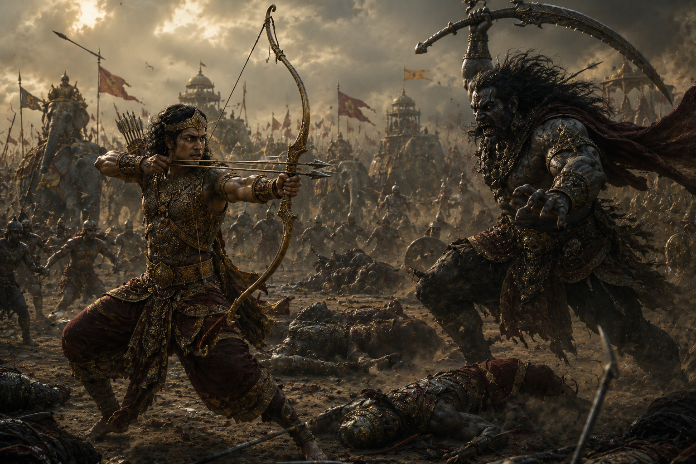
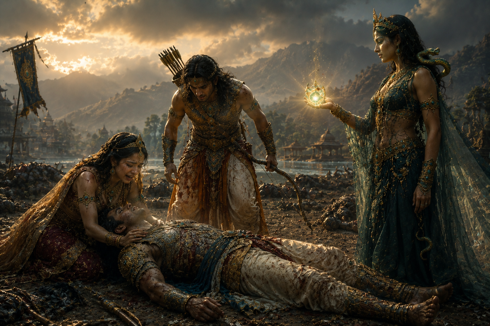
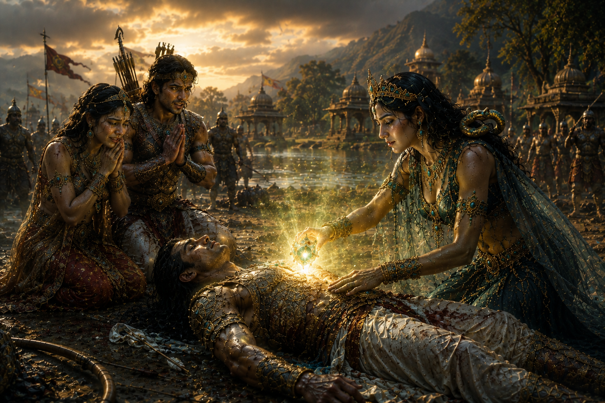

When recounting the life of Arjuna in the Mahabharata, most people remember Draupadi, Subhadra, and Chitrangada. Yet Arjuna had another wife whose story is often overlooked, though her role became crucial in several important events of the epic.
Her name was Ulupi, the princess of the Naga race.
Ulupi was the daughter of King Kauravya, one of the powerful rulers of the Nagas who governed the magnificent realm of Nagaloka, hidden beneath the sacred waters of the River Ganga.
She was not merely a princess by birth but was also highly accomplished in the traditions of the Nagas, sacred scriptures, and many mystical sciences known only to their race.
Ancient traditions also preserve another important detail about her life.
According to several texts, Ulupi had once been married to a Naga prince. However, her husband was killed by Garuda, leaving her widowed at a young age. After his death, she returned to live with her father in Nagaloka.
Meanwhile, in Hastinapura, an unexpected event forced Arjuna to leave the kingdom and begin twelve years of exile and pilgrimage.
The five Pandava brothers had made a solemn agreement regarding Draupadi.
Whenever one brother was alone with her, none of the others would enter the chamber. If anyone was compelled to do so, he would voluntarily leave the kingdom and spend twelve years in exile, travelling on pilgrimage.
One day, a distressed Brahmin approached Arjuna for help.
A group of robbers had stolen his cows.
Unfortunately, Arjuna's celestial weapons had been placed inside the chamber where Yudhishthira and Draupadi were together.
Arjuna found himself facing a profound moral dilemma.
If he did not enter the chamber, he would fail to protect the innocent Brahmin.
If he entered, he would be bound by the brothers' vow and would have to leave for twelve years.
Choosing duty over personal comfort, Arjuna entered the chamber, retrieved his weapons, rescued the Brahmin's cattle, and, without argument or hesitation, accepted the punishment of exile.
Thus began his long pilgrimage across the sacred land of Bharata.
He travelled through forests, holy rivers, ancient hermitages, and renowned places of pilgrimage.
One morning, his journey brought him to the banks of the sacred River Ganga.
As dawn broke, Arjuna placed his weapons upon the shore and stepped into the river to bathe.
At that very moment, Princess Ulupi happened to see him.
The instant her eyes fell upon Arjuna, she was deeply captivated by his radiance, courage, noble appearance, and heroic presence.
Love arose in her heart at first sight.
Using her divine Naga powers and yogic abilities, Ulupi gently drew Arjuna beneath the waters of the Ganga and brought him to the magnificent realm of Nagaloka.
Finding himself suddenly within the underwater kingdom, Arjuna looked around in astonishment.
Ulupi then approached him with humility and said,
"O Partha, I am Ulupi, daughter of King Kauravya of the Nagas. The moment I saw you bathing in the Ganga, my heart became devoted to you. I love you and wish to accept you as my husband."
Arjuna replied calmly,
"I am presently observing a vow of exile and celibacy. Under such circumstances, marriage would not be proper for me."
Ulupi smiled gently and answered,
"Your vow exists only to preserve the agreement made among the Pandavas regarding Draupadi. It does not forbid you from marrying another woman. Therefore, according to Dharma, there is no fault in accepting my proposal."
Hearing her sincere reasoning, her pure love, and the righteousness of her request, Arjuna accepted.
Their marriage was performed according to sacred rites, and Arjuna spent some time with Ulupi in the beautiful kingdom of Nagaloka.
Yet his pilgrimage was still unfinished.
When the time came for him to leave, Ulupi did not try to stop him.
Instead, she respected his duty and his path.
Before Arjuna departed, she bestowed upon him a remarkable divine blessing.
She said,
"From this day onward, no creature that dwells in water shall ever defeat you. All aquatic beings shall remain under your command, and your strength within water shall never diminish."
This blessing would later prove invaluable at several crucial moments in Arjuna's life.
Some time after Arjuna departed from Nagaloka, Ulupi gave birth to a son.
He was named Iravan (also known in some traditions as Aravan).
Iravan inherited the courage of his father, Arjuna, and the divine strength of his mother, the Naga princess Ulupi.
He was raised in Nagaloka, where he mastered archery, the art of warfare, and the mystical sciences of the Nagas.
Although Arjuna had left Nagaloka to continue his pilgrimage, Ulupi never allowed her son to grow resentful toward his father.
Instead, she always taught Iravan that Arjuna was a great warrior who lived according to Dharma, and that one day he too would be called upon to stand beside his father in the cause of righteousness.
Years passed.
Meanwhile, the conflict between the Pandavas and the Kauravas continued to grow until it finally erupted into the great War of Kurukshetra.
When news of the war reached Nagaloka, Iravan did not hesitate.
With his mother's blessings, he marched to Kurukshetra with a powerful Naga force and joined the Pandavas in support of his father.

During the early days of the war, Iravan displayed extraordinary valor.
He defeated numerous renowned warriors and slew countless soldiers of the Kaurava army.
His remarkable bravery soon became a matter of concern for the Kauravas.
According to the Mahabharata, Duryodhana eventually sent the powerful Rakshasa Alambusha to confront him.
Alambusha was a master of illusion and magical warfare.
A fierce battle followed.
Both warriors employed celestial weapons and supernatural powers against one another.
In the end, however, Alambusha overcame Iravan through deception and his mastery of illusion, and the young hero fell upon the battlefield.
Thus, Ulupi's only son attained a heroic death while fighting for Dharma.
The Mahabharata does not describe Ulupi's grief in detail, yet it is easy to imagine the pain of a mother who receives news of her only son's death.
Even so, Ulupi never placed her personal sorrow above Dharma.
She neither blamed the Pandavas nor regretted her son's sacrifice.
For her, the protection of righteousness remained greater than personal loss.
The great war eventually came to an end.
The Kauravas were defeated, and Yudhishthira ascended the throne of Hastinapura.
For many years afterward, Ulupi disappeared from the narrative of the Mahabharata.
But in time, she would return once again.
This time, she would play one of the most important roles in Arjuna's entire life.
Through her wisdom and devotion, she would not only save her husband's life but also bring an ancient curse to its destined end.
The great war of the Mahabharata had come to an end.
Yudhishthira was crowned King of Hastinapura, and after some time he resolved to perform the sacred Ashvamedha Yajna to establish his sovereign authority over the land.
According to the ancient Vedic tradition, a consecrated horse was allowed to wander freely through different kingdoms.
Any ruler who stopped the horse was required to face the king's champion in battle, while those who allowed it to pass accepted the supremacy of the emperor.
The responsibility of guarding the sacrificial horse was entrusted to Arjuna.
Accompanying the horse across many kingdoms, Arjuna fought whenever necessary and defeated numerous powerful rulers.
Eventually, the horse entered the kingdom of Manipura.
This was the very kingdom where Arjuna had married Chitrangada, the daughter of King Chitravahana, during his years of exile.
Their son, Babruvahana, had been born and raised there and had later become the king of Manipura.
When the sacrificial horse entered his kingdom, Babruvahana learned that his own father, Arjuna, was accompanying it.
Filled with reverence, he came forward to welcome his father with respect rather than challenge him in battle.
Arjuna, however, firmly declared,
"You are a Kshatriya. Once you have stopped the horse of the Ashvamedha, it is your duty to fight. If you are truly the king of this land, you must uphold your Dharma."
Babruvahana found himself caught in a painful dilemma.
On one side stood his beloved father.
On the other stood his duty as a king.
At that very moment, Princess Ulupi also arrived.
She spoke gently to Babruvahana,
"O King, your father himself wishes you to fulfill your duty as a Kshatriya. It would not be right to withdraw from battle."
Hearing Ulupi's words, Babruvahana accepted the challenge.
A fierce battle soon erupted between father and son.
Both were master archers.
Their arrows filled the sky, and neither warrior yielded for a long time.

At last, Babruvahana released a mighty celestial weapon.
The powerful missile struck Arjuna, who fell gravely wounded to the ground.
Within moments, the great Pandava appeared lifeless.
Seeing his father lying dead before him, Babruvahana was overcome with grief.
He could scarcely believe that he himself had become the cause of his father's death.
Soon, Chitrangada arrived at the battlefield.
Seeing Arjuna's lifeless body, she broke down in sorrow and angrily questioned Ulupi for allowing such a battle to take place.
Ulupi then calmly revealed the hidden truth.
She explained that during the Kurukshetra War, Arjuna had slain Bhishma Pitamaha while using Shikhandi as his shield.
Although this had been necessary for the victory of Dharma, the act had brought upon Arjuna a subtle spiritual burden through the Vasus and Mother Ganga.
The only way for him to be freed from that ancient burden was to experience defeat and death at the hands of his own son.
Ulupi had known this secret for a long time.
That was why she had encouraged Babruvahana to fight.
Her purpose had never been to destroy Arjuna, but to free him from the curse that still lingered upon him.
Ulupi then took out a sacred Naga Jewel, described in some traditions as a divine gem possessing the power to restore life.

She gently placed the jewel upon Arjuna's chest.
Its divine power began to restore life to his body.
Within moments, Arjuna slowly opened his eyes and rose once again.
Babruvahana, Chitrangada, and everyone present rejoiced with overwhelming happiness.
Ulupi then explained the entire purpose behind the battle.
Arjuna realized that everything had happened not for his destruction, but for his ultimate welfare and liberation from the ancient curse.
Filled with gratitude, he praised Ulupi's wisdom, devotion, and remarkable foresight.
He then embraced both Babruvahana and Chitrangada with affection before continuing the Ashvamedha journey.
Thus, Ulupi did far more than save the life of her husband.
She also freed him from a long-standing spiritual burden, securing her place in the Mahabharata not merely as one of Arjuna's wives, but as a wise, farsighted, and deeply righteous princess of the Nagas.
After Arjuna was restored to life, Babruvahana's overwhelming sense of guilt finally disappeared.
Chitrangada also came to understand that everything Ulupi had done was motivated not by deception or hostility, but entirely by her desire to secure Arjuna's ultimate welfare.
Arjuna deeply admired Ulupi's wisdom, foresight, and unwavering devotion.
He embraced his son Babruvahana with great affection and invited him to accompany him to the Ashvamedha sacrifice.
Babruvahana gladly accepted his father's invitation.
According to some traditions, both Chitrangada and Ulupi later traveled to Hastinapura and took part in the Ashvamedha Yajna.
Very little is recorded about Ulupi's life after these events.
Although she is mentioned only briefly in the later portions of the Mahabharata, the few episodes that describe her reveal the remarkable depth of her character.
Ulupi was far more than one of Arjuna's wives.
She was a princess of the Naga race, a wise diplomat, a guardian of Dharma, and a woman of extraordinary courage and selflessness.
When she first met Arjuna, she openly expressed her feelings without fear or hesitation.
When Arjuna hesitated because of his vow, Ulupi patiently explained the principles of Dharma that removed his doubts.
She never attempted to bind him to herself.
After their marriage, she respected his purpose, honored his pilgrimage, and allowed him to continue his journey freely.
She raised her son Iravan with such noble values that he willingly sacrificed his life for the cause of righteousness.
Even after losing her only son in the Kurukshetra War, she never abandoned the path of Dharma or blamed others for her personal sorrow.
Perhaps the greatest example of her wisdom came many years later.
She did not merely love Arjuna—she possessed the courage to make an extraordinarily difficult decision for his ultimate good.
She could have prevented the battle between Arjuna and Babruvahana.
Instead, knowing that Arjuna could only be freed from the lingering burden associated with Bhishma's death through that very event, she placed Dharma above her own emotions.
The character of Ulupi teaches that true love is not simply remaining beside someone in times of happiness.
True love is having the courage to choose the path that brings genuine welfare, even when that path is painful.
Her life stands as a beautiful example of loyalty, sacrifice, patience, wisdom, and quiet strength.
Although she receives far less attention than many of the more famous figures of the Mahabharata, every one of her actions demonstrates that a person's greatness is measured not by the length of their story, but by the depth of their character.
For this reason, Ulupi continues to be remembered as one of the most remarkable women of the Mahabharata—whose courage, wisdom, and devotion earned her an enduring place in India's epic tradition.
Mahabharata (Adi Parva, Ashvamedhika Parva)
This retelling is based primarily on the Mahabharata and is presented in a narrative style for modern readers.